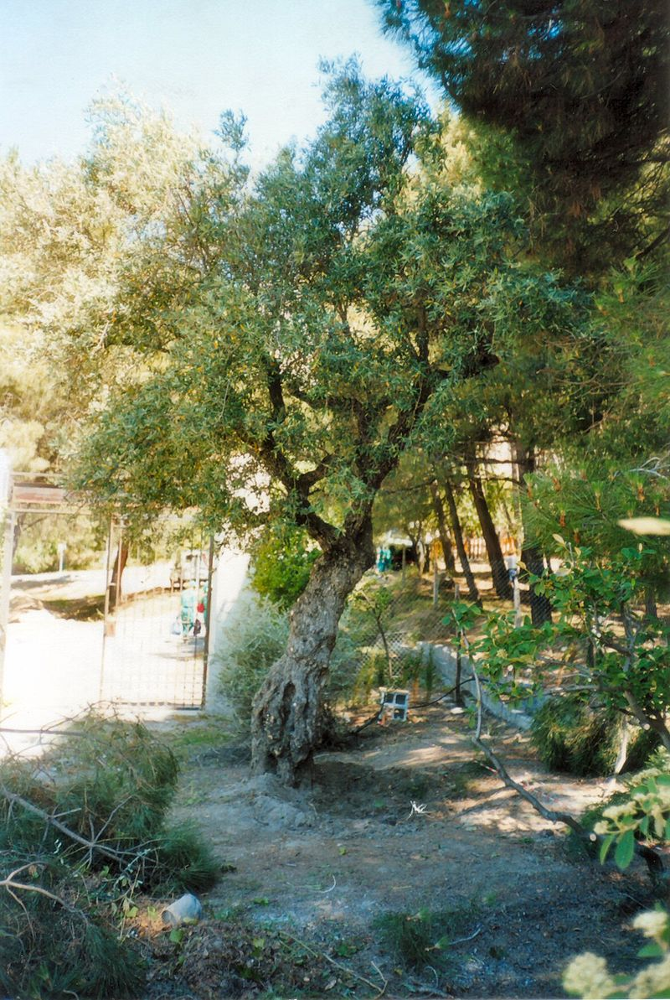
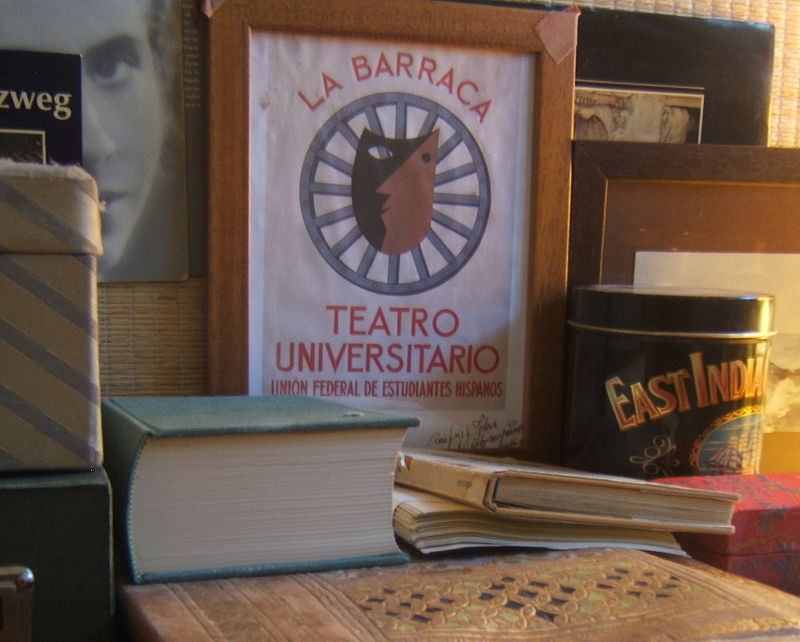
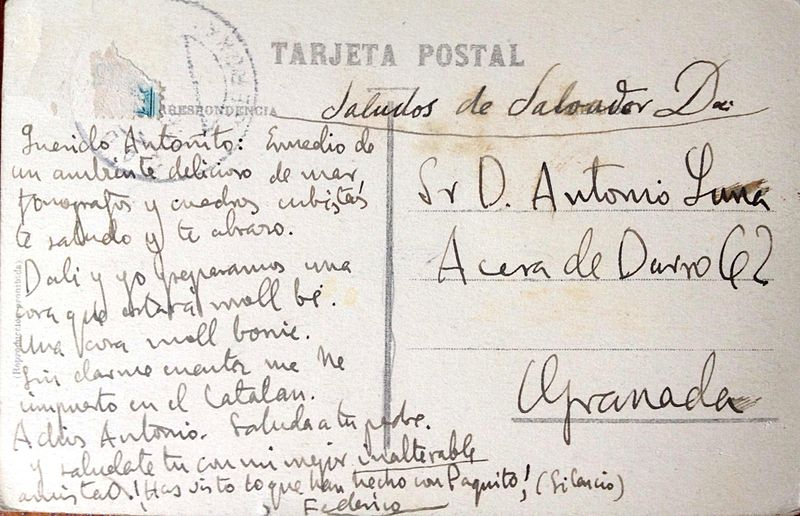
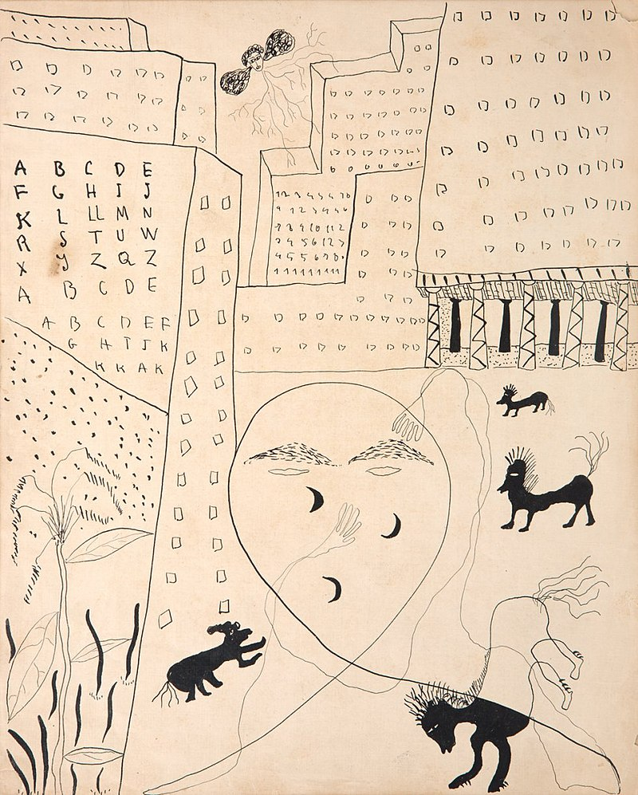
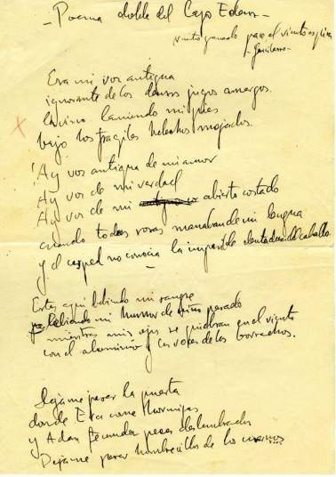

Nació el 5 de junio de 1898 en el municipio granadino de >Fuente Vaqueros, en el seno de una familia de posición económica desahogada, y fue bautizado como Federico del Sagrado Corazón de Jesús García Lorca; su padre fue el hacendado Federico García Rodríguez (1859-1945) y su madre, Vicenta Lorca Romero (1870-1959), segunda esposa de su padre,4 maestra de escuela que fomentó el gusto literario de su hijo. Su primera casa, en Fuente Vaqueros, es un museo. 1909, cuando tenía once años, la familia se mudó a la ciudad de Granada. En su adolescencia, se interesó más por la música que por la literatura, estudió piano con Antonio Segura Mesa y entre sus amigos de la universidad lo conocían más como músico que por escritor novel.
Juventud y primeras obras
En 1914 se matriculó en la Universidad de Granada para estudiar las carreras de Filosofía y Letras y de Derecho. Durante esta época, el joven Lorca se reunía con otros jóvenes intelectuales en la tertulia «El Rinconcillo» del café Alameda. En la Universidad recibió clases de Martín Domínguez Berrueta, profesor de Teoría de la Literatura y de las Artes, el cual llevó a Lorca y a sus compañeros de por Baeza, Úbeda, Córdoba, Ronda, León, Burgos y Galicia. Estos viajes por distintas partes de España fueron los que despertaron su vocación como escritor. De hecho, fruto de esto surgió su primer libro en prosa Impresiones y paisajes, publicado en 1918, una pequeña antología de sus mejores páginas en prosa sobre temas políticos y sobre sus intereses estéticos.

Vida en la Residencia de Estudiantes
En la primavera de 1919, varios de sus amigos de "El Rinconcillo" se trasladaron a Madrid, y Lorca, gracias a la ayuda de Fernando de los Ríos, quien le ayudó a convencer a sus padres a seguir sus estudios en la Residencia de Estudiantes, no tardó en unirse a ellos. Así pasó el poeta a formar parte de esta institución.
La Residencia de Estudiantes era en aquella época un hervidero intelectual, que acogió a figuras de la talla de Albert Einstein, John Maynard Keynes o Madame Curie, lo que influiría enormemente en la formación intelectual de Lorca. De esta forma, entre los años 1919 y 1926, se relacionó con muchos de los escritores e intelectuales más importantes de España, como Luis Buñuel, Rafael Alberti o Salvador Dalí y consiguió huir del tedio cultural provinciano, que odiaba, como escribió a su amigo el compositor Adolfo Salazar:
Estoy encendío como una rosa de cien hojas, pero la realidad me encierra en su casa fea de espartos. Me escriben de la Residencia diciéndome que no tienen habitación. ¡Esto es terrible! ¿Cómo voy yo a irme a otra parte? Me asustan los ambientes Baroja y Galdós, la patrona, el estudiante vicioso... ¡Qué horror! Pues no digamos nada los ambientes Zamacois, etc... ¡Es horrible! Así pues, hasta que tenga habitación sola en la Residencia no voy a Madrid... ¡Qué pena! (...) Tengo mala sombra. Y me hace falta salir, ¿lo oyes? Yo me ahogo. Este ambiente provinciano terrible y vacío llena mi corazón de telarañas.
Entre 1919 y 1921, Lorca publicó Libro de poemas, compuso sus primeras Suites, estrenó El maleficio de la mariposa y desarrolló otras piezas teatrales. También durante esta etapa, gracias otra vez a la ayuda de Fernando de los Ríos, tuvo ocasión de conocer a Juan Ramón Jiménez, que influiría en su visión de la poesía y con el que llegaría a tener mucha amistad.
En mayo de 1921, Lorca volvió a Granada, teniendo así la oportunidad de conocer al maestro Manuel de Falla, que se había instalado en la ciudad en septiembre del año anterior. Su amistad les llevó a emprender varios proyectos en torno a la música, el cante jondo, los títeres, y otras actividades artísticas paralelas. Ese mismo año, Lorca escribió el Poema del cante jondo, obra que no se publicaría hasta diez años después. Esos años en Granada giraron alrededor de dos focos culturales: Falla y la tertulia de El Rinconcillo, reunida en el café Alameda.
El 6 de enero de 1923, festividad de los Reyes Magos, Falla participó en una fiesta privada montada por Federico, Adolfo Salazar y Hermenegildo Lanz, dedicada a dos niñas de la familia, su hermana Isabel y Laura, la hija de Fernando de los Ríos.6 Se representó una adaptación lorquiana para títeres de cachiporra del cuento andaluz "La niña que riega la albahaca y el príncipe preguntón", un entremés atribuido a Cervantes y el Misterio de los Reyes Magos, un auto sacramental del siglo XIII, para el que Falla había colaborado en la composición de la música incidental.7 Aquel mismo año, Lorca y Falla trabajaron en una opereta lírica, Lola, la comedianta, obra que nunca terminaron.
En 1925 viajó a Cadaqués para pasar la Semana Santa en casa de su amigo Salvador Dalí. Esta visita y otra más larga en 1927 marcaron profundamente la vida y obra de ambos. Fruto de esta intensa amistad fue la "Oda a Salvador Dalí", que se publicó en la Revista de Occidente en 1926. Además, fue el mismo Dalí el que animó al escritor a iniciarse en la pintura, consiguiendo que en 1927 presentase su primera exposición en las Galeries Dalmau de Barcelona. Por su parte, Lorca alentó a Dalí como escritor.
Generación del 27
El término parte de la fecha de diciembre de 1927, cuando se reúnen varios poetas españoles en Sevilla, en un acto organizado por la Sociedad Económica de Amigos del País para conmemorar los trescientos años de la muerte de Luis de Góngora.9 Cabe destacar que esta reunión es el origen de lo que algunos llaman la Generación del 27 en la que se incluyen escritores como Jorge Guillén, Pedro Salinas, Rafael Alberti, Dámaso Alonso, Gerardo Diego, Luis Cernuda, Vicente Aleixandre, Manuel Altolaguirre y Emilio Prados.
No todos los estudiosos reconocen el concepto de generación a la generación del 27 al no cumplir los criterios establecidos por el historiador Julius Petersen (fechas de nacimiento próximas; formación educativa semejante; buenas relaciones entre ellos; fecha próxima en la publicación de sus primeras obras; hecho histórico generacional; ideas comunes; lenguaje generacional; presencia de un guía ideológico; y anquilosamiento de la generación anterior). Algunos han propuesto un cambio de nombre como «Generación de la Dictadura», «Generación Guillén-Lorca»,«Generación de 1925»,«Generación de las Vanguardias» o «Generación de la amistad». Sin embargo, es un término muy admitido por comodidad y costumbre.Este grupo se caracteriza por fundir las formas de la poesía tradicional (neopopularismo) con los movimientos de vanguardia; por tratar los mismos temas de una manera similar (la muerte en sentido trágico; el amor como fuerza que da sentido a la vida; preocupaciones sociales como la injusticia, la miseria, etc.), por el uso de la metáfora y la imagen; etc.
Se decir que la etapa de 1924 a 1927 fue el momento en el que el escritor llegó a su madurez como poeta.
Sin embargo, también es en esta época cuando Federico García Lorca vive, según sus palabras, «una de las crisis más hondas de mi vida»,10 a pesar de que sus obras Canciones y Primer romancero gitano, publicados en 1927 y 1928 respectivamente, están gozando de gran éxito crítico y popular. Esta crisis fue provocada por varios acontecimientos en su vida. Por un lado, con el éxito del Romancero gitano, comenzó a verse a Lorca como costumbrista, defensor de los gitanos, ligado al folclore andaluz. Este se quejaba en una carta a Jorge Guillén diciendo: «Me va molestando un poco mi mito de gitanería. Los gitanos son un tema. Y nada más. Yo podía ser lo mismo poeta de agujas de coser o de paisajes hidráulicos. Además, el gitanismo me da un tono de incultura, de falta de educación y de poeta salvaje que tú sabes bien no soy. No quiero que me encasillen. Siento que me va echando cadenas».10 Y, por otro lado, se separó de Emilio Aladrén, un escultor con el que había mantenido una intensa relación afectiva. Además, esta crisis debió agravarse cuando Lorca recibió las duras críticas de Dalí y Luis Buñuel sobre el Romancero gitano.10 A pesar de esto, Lorca siguió trabajando y comenzando nuevos proyectos, como la revista Gallo de la que solo se publicaron dos números o la obra Amor de don Perlimplín con Belisa en su jardín, la cual intentó estrenar en 1929 pero fue prohibida por la censura de la Dictadura de Primo de Rivera.
Viaje a Nueva York
En la primavera de 1929, Fernando de los Ríos propuso a Lorca que le acompañase en su viaje a Nueva York. Este aceptó viendo la oportunidad de alejarse de Aladrén ,12 aprender inglés, cambiar de vida y renovar su obra. Se embarcaron en el Olympic —buque hermano del malogrado Titanic a principios de junio de 1929 y llegaron el 26 de junio a Nueva York; él mismo describió su estancia en dicha ciudad estadounidense como "una de las experiencias más útiles de mi vida". Describió a la ciudad como un lugar «de alambre y muerte» y se vio sorprendido por la economía capitalista y el trato a los negros. Según él, Estados Unidos era «una civilización sin raíces. [Los ingleses] han levantado casas y casas, pero no han ahondado en la tierra». Volcó sus impresiones en Poeta en Nueva York, que no se publicó hasta cuatro años después de su muerte.1314 En su trabajo Lorca buscó expresar «la esclavitud dolorosa del hombre y máquina juntos» en una ciudad a la que denominó como «geometría y angustia».
En marzo de 1930 dejó Nueva York para viajar a la ciudad de La Habana en Cuba, donde exploró la cultura y la música cubana y trabajó en nuevos proyectos como El público y Así que pasen cinco años. En junio de 1930, Lorca ya estaba en Madrid.
La Barraca ambulante

Con la instauración de la Segunda República Española en abril de 1931, comenzó una nueva etapa para Lorca. Junto a Eduardo Ugarte, el escritor granadino codirigió La Barraca, un grupo de teatro universitario15 que representó obras teatrales del Siglo de Oro (Calderón de la Barca, Lope de Vega, Miguel de Cervantes) por ciudades y pueblos de España. Financiado por el Ministerio de Educación que dirigía el socialista Fernando de los Ríos, tuvo por primera vez en sus manos un proyecto propio. El estallido de la guerra civil española frustraría el empeño.
En América
En 1933 la compañía de Lola Membrives estrenó en Buenos Aires Bodas de sangre con un gran éxito popular. Por ello, Lorca recibió la invitación de Membrives y de su marido para viajar a esa ciudad argentina. Allí, consiguió triunfar profesionalmente y, gracias a esto, consiguió su independencia económica. A lo largo de los seis meses que permaneció en Buenos Aires, tuvo la oportunidad de dirigir Bodas de sangre, que fue representada más de ciento cincuenta veces; Mariana Pineda, La zapatera prodigiosa, El retablillo de don Cristóbal y una adaptación de La dama boba de Lope de Vega. También durante este tiempo tuvo la ocasión de dar varias conferencias y de hacer nuevas amistades, como Pablo Neruda, Juana de Ibarbourou, Ricardo Molinari, Salvador Novo y Pablo Suero.
Cuando García Lorca volvió a España en 1934, mantuvo un elevado ritmo creativo: terminó obras como Doña Rosita la soltera,La casa de Bernarda Alba y Llanto por Ignacio Sánchez Mejías; revisó obras como Poeta en Nueva York,Diván del Tamarit y Suites; hizo un viaje a Barcelona para dirigir algunas de sus obras, recitar sus poemas y dar conferencias, visitó Valencia16 y siguió representando obras como La Barraca; organizó clubes de teatro; etc. También tuvo una gran estadía en Montevideo (Uruguay), donde terminó de escribir un par de obras y tuvo contacto con los artistas locales, tales como Juana de Ibarbourou.
Sin embargo, es también en este momento cuando en España se empieza a vivir una época de violencia e intolerancia. La situación política era insostenible. Estaba a punto de estallar la Guerra civil española.

Últimos días y fusilamiento
Colombia y México, cuyos embajadores previeron que el poeta pudiera ser víctima de un atentado debido a su puesto de funcionario de la República, le ofrecieron el exilio, pero Lorca rechazó las ofertas,17 y se dirigió a la Huerta de San Vicente para reunirse con su familia. Llegó allí el 14 de julio de 1936, tres días antes de que estallara en Melilla la sublevación militar contra la República que dio lugar a la Guerra civil. Inicialmente, la situación en la capital granadina fue tranquila y no hubo ningún incidente. Sin embargo, el día 20, la guarnición militar se sublevó y en poco tiempo el centro de Granada estaba en poder de las fuerzas sublevadas. El cuñado de Federico y alcalde de la ciudad, Manuel Fernández-Montesinos, fue arrestado en su despacho del ayuntamiento. Sería fusilado un mes más tarde.
En esos momentos políticos alguien le preguntó sobre su preferencia política y él manifestó que se sentía a su vez católico, comunista, anarquista, libertario, tradicionalista y monárquico.18 De hecho nunca se afilió a ninguna de las facciones políticas y jamás discriminó o se distanció de ninguno de sus amigos, por ninguna cuestión política. Conocía al líder y fundador de la Falange Española, José Antonio Primo de Rivera, muy aficionado a la poesía.1920 El propio Lorca dijo de él al joven Gabriel Celaya, en marzo de 1936:
José Manuel [Aizpurúa] es como José Antonio. Otro buen chico. ¿Sabes que todos los viernes ceno con él? Solemos salir juntos en un taxi con las cortinillas bajadas, porque ni a él le conviene que le vean conmigo ni a mí me conviene que me vean con él.
Esta declaración es entendida por los estudiosos como una exageración o una broma, como lo apuntó el propio Celaya al relatar esta anécdota.22 Al describir la escena, resume las consecuencias dramáticas de la actitud insensata de García Lorca:
Federico se reía. Creía que aquello no era más que una travesura de niños. No veía nada detrás. Se reía como de una buena broma. Pero esa risa, esa confianza en que el hombre es siempre humano, ese creer que un amigo, fascista o no, es un amigo, le costó la muerte. Porque fueron unos amigos, amigos que él contaba entre sus mejores, quienes en el último momento resultaron ser ante todo y sobre todo fascistas.
Se sentía, como dijo al periodista y caricaturista Luis Bagaría en una entrevista para El Sol de Madrid poco antes de su muerte, íntegramente español, pero «antes que esto hombre del mundo y hermano de todos».

Yo soy español integral y me sería imposible vivir fuera de mis límites geográficos; pero odio al que es español por ser español nada más, yo soy hermano de todos y execro al hombre que se sacrifica por una idea nacionalista, abstracta, por el solo hecho de que ama a su patria con una venda en los ojos. El chino bueno está más cerca de mí que el español malo. Canto a España y la siento hasta la médula, pero antes que esto soy hombre del mundo y hermano de todos. Desde luego no creo en la frontera política.
En Granada buscó refugio en casa de la familia de su amigo el poeta Luis Rosales, donde se sentía más seguro ya que dos de sus hermanos, en los que confiaba, eran destacados falangistas de Granada.10 A pesar de ello, el 16 de agosto de 1936, se presentó allí la Guardia Civil para detenerlo. Acompañaban a los guardias Juan Luis Trescastro Medina, Luis García-Alix Fernández y Ramón Ruiz Alonso, exdiputado de la CEDA, que había denunciado a Lorca ante el gobernador civil de Granada José Valdés Guzmán. Valdés consultó con Queipo de Llano lo que debía hacer, a lo que este le respondió: «Dale café, mucho café».2 Según el historiador Ian Gibson, se acusaba al poeta de «ser espía de los rusos, estar en contacto con éstos por radio, haber sido secretario de Fernando de los Ríos y ser homosexual».25 Fue trasladado al Gobierno Civil, y luego al pueblo de Víznar donde pasó su última noche en una cárcel improvisada, junto a otros detenidos.1
Después de que la fecha exacta de su muerte haya sido objeto de una larga polémica, parece definitivamente establecido que Federico García Lorca fue fusilado a las 4:45 h de la madrugada del 18 de agosto,2627 en el camino que va de Víznar a Alfacar. Su cuerpo, que jamás se recuperó,17 permanece enterrado en una fosa común anónima en algún lugar de esos parajes, junto con el cadáver de un maestro nacional, Dióscoro Galindo, y los de los banderilleros anarquistas Francisco Galadí y Joaquín Arcollas, ejecutados con él.28 Juan Luis Trescastro presumiría después de haber participado personalmente en los asesinatos, recalcando la homosexualidad de Lorca.
H. G. Wells envió el siguiente despacho a las autoridades militares de Granada:
cuya respuesta fue la siguiente:
Coronel gobernador de Granada a H. G. Wells.—Ignoro lugar hállase D. Federico García Lorca.—Firmado: Coronel Espinosa.30El 23 de abril de 2015 se hizo público un informe policial fechado el 9 de julio de 1965,31 basado en una investigación realizada ese mismo año, que corroboraba la ejecución de Lorca por las autoridades franquistas.32 En el informe se le acusaba de «socialista», amigo de Fernando de los Ríos, y «masón, perteneciente a la logia 'Alhambra', en la que adoptó el nombre simbólico de 'Homero'», y le atribuía «prácticas de homosexualismo y aberración». También afirma que fue condenado a muerte tras «haber confesado», aunque no especifica qué habría confesado. El informe fue redactado por la 3.ª brigada regional de investigación social de la Jefatura Superior de la Policía de Granada a petición de la hispanista francesa Marcelle Auclair, aunque nunca obtuvo respuesta, ya que el informe fue ocultado por la dictadura franquista.33 La existencia del dicho informe fue mencionada por primera vez por el periodista falangista Eduardo Molina Fajardo en su libro póstumo, Los últimos días de García Lorca (1983). Según Gibson, es evidente que Molina Fajardo había tenido acceso al informe policial.

Obra
Estilo
Los símbolos: de acuerdo con su gusto por los elementos tradicionales, Lorca utiliza frecuentemente símbolos en su poesía. Se refieren muy frecuentemente a la muerte aunque, dependiendo del contexto, los matices varían bastante. Son símbolos centrales en Lorca:
La luna: es el símbolo más frecuente en Lorca. Su significación más frecuente es la de muerte, pero también puede simbolizar el erotismo, la fecundidad, la esterilidad o la belleza.
El agua: cuando corre, es símbolo de vitalidad. Cuando está estancada, representa la muerte.
La sangre: representa la vida y, derramada, es la muerte. Simboliza también lo fecundo, lo sexual.
El caballo (y su jinete): está muy presente en toda su obra, portando siempre valores de muerte, aunque también representa la vida y el erotismo masculino.
El toro: García Lorca era aficionado a los toros; según sus palabras: «Creo que los toros es la fiesta más culta que hay en el mundo. Es el drama puro en el cual el español derrama sus mejores lágrimas y su bilis. Es el único sitio a donde se va con la seguridad de ver la muerte rodeada de la más deslumbradora belleza (...)».
Las hierbas: su valor dominante, aunque no único, es el de ser símbolos de la muerte.
Los metales: también su valor dominante es la muerte. Los metales aparecen bajo la forma de armas blancas, que conllevan siempre tragedia.
La metáfora: es el procedimiento retórico central de su estilo. Bajo la influencia de Góngora, Lorca maneja metáforas muy arriesgadas: la distancia entre el término real y el imaginario es considerable. En ocasiones, usa directamente la metáfora pura. Sin embargo, a diferencia de Góngora, Lorca es un poeta conceptista, en el sentido de que su poesía se caracteriza por una gran condensación expresiva y de contenidos, además de frecuentes elipsis. Las metáforas lorquianas relacionan elementos opuestos de la realidad, transmiten efectos sensoriales entremezclados, etc.
El neopopularismo: aunque Lorca asimila sin problemas las novedades literarias, su obra está plagada de elementos tradicionales que, por lo demás, demuestran su inmensa cultura literaria. La música y los cantos tradicionales son presencias constantes en su poesía. No obstante, desde un punto de vista formal no es un poeta que muestre una gran variedad de formas tradicionales; sin embargo, profundiza en las constantes del espíritu tradicional de su tierra y de la gente: el desgarro amoroso, la valentía, la melancolía y la pasión.
Poesía
La obra poética de Lorca constituye una de las cimas de la poesía de la generación del 27 y de toda la literatura española. La poesía lorquiana es el reflejo de un sentimiento trágico de la vida, y está vinculada a distintos autores, tradiciones y corrientes literarias. En esta poesía conviven la tradición popular y la culta. Aunque es difícil establecer épocas en la poética de Lorca, algunos críticos diferencian dos etapas: una de juventud y otra de plenitud.
Época de juventud
Aquí se incluyen sus primeros escritos: Impresiones y paisajes (en prosa, aunque sin embargo muestra procedimientos característicos del lenguaje poético) y Libro de poemas (escrito bajo el influjo de Rubén Darío, Antonio Machado y Juan Ramón Jiménez); en este poema García Lorca proyecta un amor sin esperanza, abocado a la tristeza.
La Diputación de Granada editó en 1986 una antología poética, seleccionada, presentada y anotada por Andrew A. Anderson.43 Esta antología aporta Suites (1920-1923) y Poemas en prosa (1927-1928). En Suites se encuentra «Cancioncilla del niño que no nació» (pág. 71), y en Poemas en prosa «Degollación de los Inocentes» (pág. 150). En estos escritos el poeta hace referencia al drama del aborto.
La viudita y el conde Cabra, basada en una historia real y que llegó a sus oídos a través de una canción infantil.
Época de plenitud
Comienza con el Poema del cante jondo (1921) que, mediante la unidad temática, formal, conceptual y la expresión de los sentimientos, debida en parte a su inspiración folclórica, describe la lírica neopopularista de la generación del 27.
En Primeras canciones (1936) y Canciones (1927) emplea las mismas formas: la canción y el romance. Los temas del tiempo y la muerte se enmarcan en el alba, la noche, la ciudad andaluza y los paisajes lunares.
Luigi Maria Corsanico Francisco recita a Lorca, "Balada Triste"
La muerte y la incompatibilidad moral del mundo gitano con la sociedad burguesa son los dos grandes temas del Romancero gitano. Destacan los procedimientos habituales de poesía de origen popular, y la influencia del compositor Manuel de Falla. No se trata de una obra folclórica; está basada en los tópicos con que se asocia lo gitano y andaluz. Lorca eleva al personaje gitano al rango de mito literario, como después hará también con el negro y el judío en Poeta en Nueva York. En el Romancero gitano emplea el romance, en sus variantes de novelesco, lírico y dramático; su lenguaje es una fusión de lo popular y lo culto
Lorca escribió Poeta en Nueva York a partir de su experiencia en EE. UU., donde vivió entre 1929 y 1930. Para Lorca la civilización moderna y la naturaleza son incompatibles. Su visión de Nueva York es de pesadilla y desolación, propia de un mal sueño. Para expresar la angustia y el ansia de comunicación que lo embargan, emplea las imágenes visionarias del lenguaje surrealista. Su libertad expresiva es máxima, aunque junto al verso libre se advierte el uso del verso medido (octosílabo, endecasílabo y alejandrino).
El Diván del Tamarit (1940) es un libro de poemas de atmósfera o sabor oriental, inspirado en las colecciones de la antigua poesía arábigo-andalusí. El tema central es el del amor sujeto a experiencias frustrantes y amargas; su lenguaje está muy próximo al de Poeta en Nueva York.
Llanto por la muerte de Ignacio Sánchez Mejías (1935) es una elegía de incontenible dolor y emoción que actúa de homenaje al torero sevillano que tanto apoyó a los poetas de la generación del 27.
La obra poética de García Lorca se cierra con Seis poemas gallegos y la serie de once poemas amorosos titulada Sonetos del amor oscuro. Lorca siempre ha contado con el respeto y admiración incondicional de los poetas de generaciones posteriores a la Guerra Civil. Considerado un poeta maldito, su influencia se ha dejado sentir entre los poetas españoles del malditismo.
Libro de poemas (1921)
Poema del cante jondo (1921)
Oda a Salvador Dalí (1926)
Romancero gitano (1928)
Poeta en Nueva York (1930)
Llanto por Ignacio Sánchez Mejías (1935)
Seis poemas galegos (1935)
Diván del Tamarit (1936)
Sonetos del amor oscuro (1936)
Francisco Rabal recita a Lorca, "La sangre derramada"
Teatro
El teatro de García Lorca es, con el de Valle-Inclán, el de mayor importancia escrito en castellano en el siglo XX. Es un teatro poético, en el sentido de que gira en torno a símbolos medulares —la sangre, el cuchillo o la rosa—, de que se desarrolla en espacios míticos o presenta un realismo trascendido, y de que, en fin, encara problemas sustanciales del existir. El lenguaje, aprendido en Valle-Inclán, es también poético. Sobre Lorca influyen también el drama modernista (de aquí deriva el uso del verso), el teatro lopesco (evidente, por ejemplo, en el empleo organizado de la canción popular), el calderoniano (desmesura trágica, sentido de la alegoría) y la tradición de los títeres. La producción dramática de Lorca puede ser agrupada en cuatro conjuntos: farsas, comedias «irrepresentables» (según el autor), tragedias y dramas.
Entre las farsas, escritas entre 1921 y 1928, destacan La zapatera prodigiosa, en la que el ambiente andaluz sirve de soporte al conflicto, cervantino, entre imaginación y realidad, y Amor de don Perlimplín con Belisa en su jardín, complejo ritual de iniciación al amor, que anuncia los «dramas irrepresentables» de 1930 y 1931: El público y Así que pasen cinco años, sus dos obras más herméticas, son una indagación en el hecho del teatro, la revolución y la presunta homosexualidad —la primera— y una exploración —la segunda— en el ser humano y en el sentido del vivir.
Consciente del éxito de los dramas rurales poéticos, Lorca elabora las tragedias Bodas de sangre (1933) y Yerma (1934), conjugación de mito, poesía y sustancia real.
Los problemas humanos determinan los dramas. Así, el tema de la «solterona» española (Doña Rosita la soltera, 1935), o el de la represión de la mujer y la intolerancia en La casa de Bernarda Alba (1936), para muchos la obra maestra del autor.
Obras teatrales
El maleficio de la mariposa (1921)
Mariana Pineda (1927)
La zapatera prodigiosa (1930)
Retablillo de Don Cristóbal (1930)
El público (1930)
Así que pasen cinco años (1931)
Amor de don Perlimplín con Belisa en su jardín (1933)
Bodas de sangre (1933)
Yerma (1934)
Doña Rosita la soltera o el lenguaje de las flores (1935)
La casa de Bernarda Alba (1936)
Comedia sin título (inacabada) (1936)44
Prosa
Impresiones y paisajes
Filmografía
Sobre la vida de Lorca
Deep song, black sound (1968), de P. Luke para la BBC.
L'assassinio di Federico Garcia Lorca (1976), de Alessandro Cane para la RAI.
Federico García Lorca: Murder in Granada (1976), documental de televisión dirigido por Humberto López y Guerra producido por la televisión sueca TV1.
Lorca, muerte de un poeta (1987), serie de televisión española dirigida por Juan Antonio Bardem.
Muerte en Granada (1997), dirigida por Marcos Zurinaga.
Lorca (1998), dirigida por Iñaki Elizalde.
La luz prodigiosa (2003), dirigida por Miguel Hermoso.
Lorca. El mar deja de moverse (2006), documental dirigido por Emilio Ruiz Barrachina.
Sin límites (Little ashes) (2008), dirigida por Paul Morrison semibiográfico sobre las relaciones entre Dalí, Lorca y Buñuel.
El deseo y la realidad (2009), documental dirigido por Rafael Zarza y Fernando García de Canales.
Mudanza (2009), dirigida por Pere Portabella.
Actores que lo han interpretado
1987 - Nickolas Grace en la serie Lorca, muerte de un poeta.
1991 - Nikolas Stefanov en el telefilm Dali.
1996 - Andy García en la película Muerte en Granada.
1998 - Miguel Bosé en el cortometraje Lorca.
2001 - Adrià Collado, en la película Buñuel y la mesa del rey Salomón.
2001 - Sergio Villanueva, en la miniserie Viento del pueblo.
2002 - Carles Marti en el telefilm Dalí, être Dieu.
2003 - Nino Manfredi en la película La luz prodigiosa.
2006 - Jaume Najarro en el cortometraje El Perro catalán.
2008 - Jaime Villanueva en la miniserie Martes de carnaval.
2008 - Javier Beltrán, en la película Sin límites.
2011 - Cristian Olave, en el cortometraje Cartas de Lorca.
2011 - Jordi Llovet, en el cortometraje Puño poético.
2012 - Pepe Cibrián Campoy, en su obra Marica.
2013 - Álvaro Ovalle en la película Federico García Lorca Noir Despair.
2015 - Ángel Ruiz en el 8º episodio del El ministerio del tiempo.
2015 - Fran Perea en el telefilm La Xirgu.
2016 - Nacho Brande en el musical teatral Mi princesa roja.
2017 - Néstor Gutiérrez en la representación teatral Federico y Lola, el desencuentro.
. Ahora es un museo.")